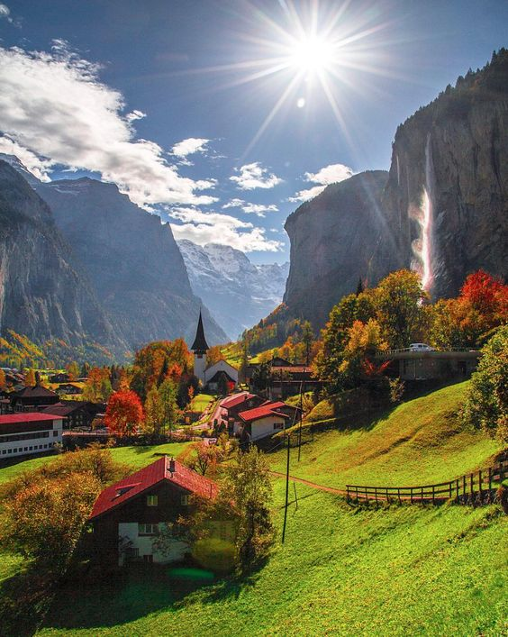
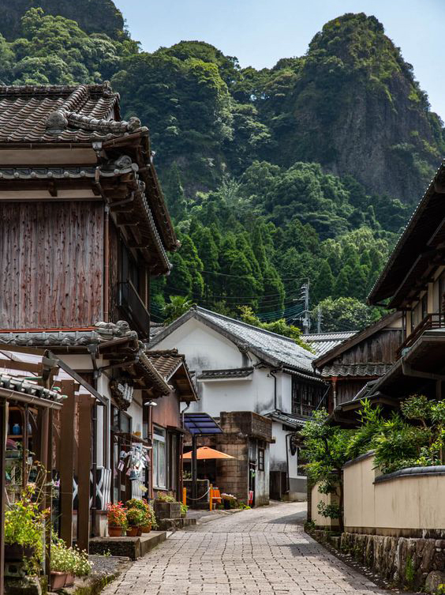
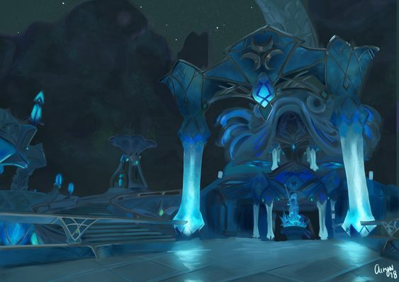
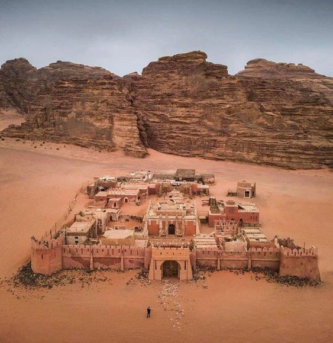
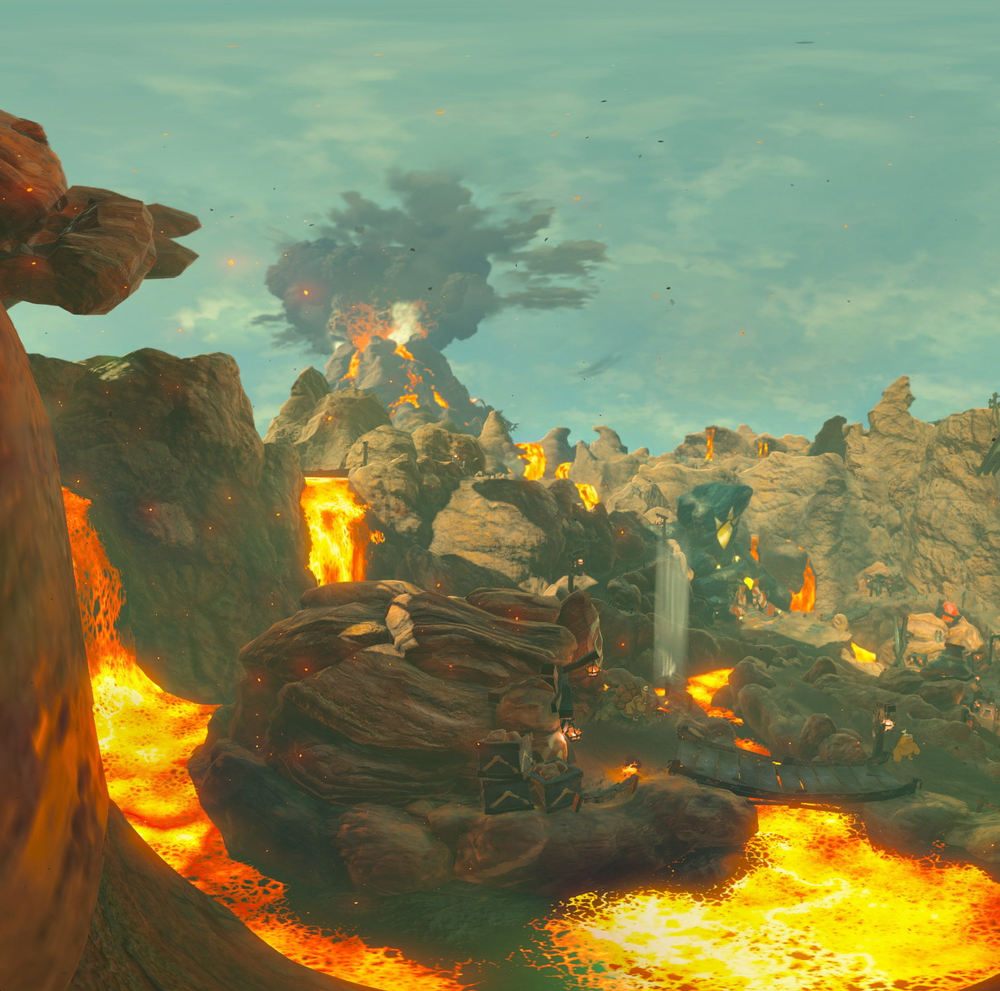
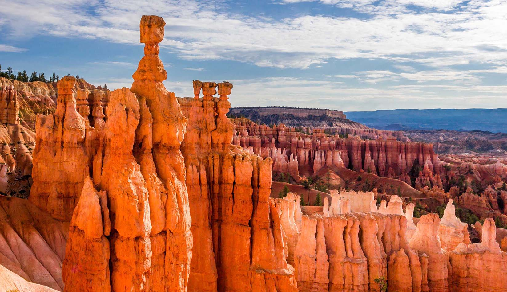

Each destination offers a unique experience.
No matter what your definition of vacation is,
we are sure you will enjoy your time here.
Ready to explore all Hyrule has to offer?
Here are just a few of our most famous destinations.

Though small, Kakariko is a village you have to visit! It carries a
lot of history as it was one of the few villages left intact after
the tragic events of the calamity. Located in the West Necluda
region of Hyrule, it contains several houses, gardens, and a
selection of stores.
Hateno is one of the larger villages that survived the calamity
unscathed. It is rumored to be home to one of the champions that
assisted Princess Zelda in the age of calamity. The village contains
an inn, general store, working windmills, and a special fabric dye shop.


Home to the Zora, Zora’s Domain is easily identifiable by its unique
blue structure surrounded by waterfalls and constant rain.
It features a memorial statue of the late champion Mipha who is Zora
herself. It is located in the Lanayru Great Spring region and
includes a store and inn.
Sorry! Only vai allowed. Gerudo has a unique policy of only allowing
women in their town. This desert getaway includes a clothing and
jewelry shop for Gerudo fashion, a hotel featuring massage specialties,
the Noble Canteen serving its famous Noble pursuit, and is home to
Sand-Seal racing!


Fairly close to Death Mountain, make sure to bring fireproof elixirs
when visiting this extremely hot lava city! Gorons who live here
work in mining precious gems such as diamonds and rubies. The city
includes outdoor kitchen Protein Palace, Rollin’ Inn with famous hot
rock beds, and relaxing hot springs.
Home of the Rito, this beautiful village is built to the sky. It is
located in the middle of Lake Totori and
includes stores such as Brazen Beak and Slippery Falcon. Most
importantly, Rito Village features Revali’s Landing. It is a special
place where late champion Revali used to land after a day out
perfecting his impressive flying skills.
